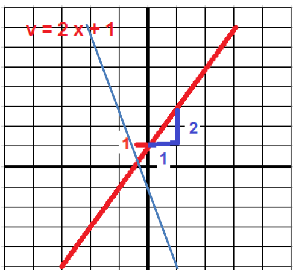
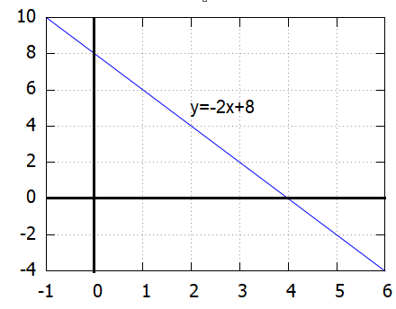
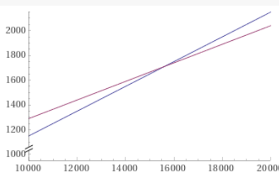

Suoran yhtälö ja lineaarinen malli
Contents
Suoran yhtälö ja lineaarinen malli¶
Suoran yhtälön perusmuoto y = k x + b¶
Suoran yhtälön oikea puoli on ensimmäisen asteen polynomi, jossa muuttujan x kerrointa
k sanotaan suoran kulmakertoimeksi ja parametria b vakiotermiksi.
Suoran yhtälön parametrit
Kulmakerroin kertoo y:n muutoksen, kun x kasvaa yhdellä.
Vakiotermi kertoo kohdan, jossa suora leikkaa y-akselin.
Alla on suoran y = 2 x + 1 kuvaaja. Sen kulmakerroin on 2 ja vakiotermi 1

Suoran yhtälö, kun kulmakerroin k ja suoran piste \((x_0,y_0)\) tunnetaan.
\( y - y_0 =k (x-x_0) \)
Mikä on suoran yhtälö, kun kulmakerroin k = -2 suora kulkee pisteen (3,2) kautta?
Vastaus: \(y = -2x+8\)
Ratkaisu, tapa1
Sijoitetaan k=2 ja \((x_0,y_0)\) yhtälöön \( y - y_0 =k (x-x_0) \), jolloin saadaan
\( y - 2 = -2 (x-3) \). Ratkaistaan yhtälö y:n suhteen:
\( y - 2 = -2 x+ 6 \)
\( y = -2x + 8 \)

Ratkaisu, tapa2
Tehtävä voidaan ratkaista myös ilman yo. kaavaa lähtien perusmuodosta y = k x + b,
johon sijoitetaan k = -2 ja piste (3,2).
\(2 = -2*3 + b\) => b = 8
Suoran yhtälö on siten \( y = -2x + 8 \)
Suoran yhtälö, kun 2 suoran pistettä \((x_1,y_1)\) ja \((x_2,y_2)\) tunnetaan.
Lasketaan kulmakerroin kaavalla k = \(\frac{y_2-y_1}{x_2-x_1}\)
Muodostetaan suoran yhtälö \( y - y_1 =k (x-x_1) \) (tässä voidaan käyttää myös pistettä \((x_2,y_2)\)
Mikä on sen suoran yhtälö, joka kulkee pisteiden (3,1) ja (-1,7) kautta.
Vastaus: \(y = -\frac{3}{2}x+\frac{11}{2}\)
Ratkaisu, tapa1
Lasketaan kulmakerroin k = \(\frac{7-1}{-1-3}\) = -\(\frac{3}{2}\)
Suoran yhtälö on \( y - 1 = -\frac{3}{2} (x-3) \) eli
\( y - 1 = -\frac{3}{2}x+\frac{9}{2} \)
\( y = -\frac{3}{2}x+\frac{9}{2}+\frac{2}{2} \)
\(y = -\frac{3}{2}x+\frac{11}{2}\)
Ratkaisu, tapa2
Tehtävä voidaan ratkaista myös ilman yo. kaavaa lähtien perusmuodosta y = k x + b,
johon sijoitetaan suoran tunnettujen pisteiden koordinaatit:
\(\begin{cases}
1 = 3 k + b\\
7= - k + b
\end{cases}\)
Ratkaistaan k ja b esim. WolframAlphassa komennolla solve 1=3k+b, 7 =-k + b,
jolloin saadaan \(k = -\frac{3}{2}\) ja \(b = \frac{11}{2}\)
Lineaarinen malli¶
Lineaarinen malli on jokin reaalielämän ilmiö, joka voidaan mallintaa käyttäen suoran yhtälöä y = k x + b
Esimerkkejä lineaarisesta mallista ovat sellaiset palvelut, joiden hinta koostuu kiinteästä perusosasta ja kulutukseen perustuvasta osasta.
Esim. Rovaniemellä omakotitalon kaukolämmön kuukausilasku koostuu 55 euron perusmaksusta ja energiamaksusta, jonka yksikköhinta on 50 eur/MWh. Kuukausilaskun loppusumma Y voidaan esittää kulutuksen X funktiona seuraavasti:
\( Y = 50 X + 55 \)
Suoran yhtälöön liittyviä kaavoja voidaan soveltaa lineaariseen malliin liittyvissä laskuissa, mistä seuraavassa on muutamia esimerkkejä.
Vuosittainen vesimaksu koostuu kiinteästä kulutuspaikkamaksusta, sekä veden kulutuksesta riippuvasta osasta.
Asiakas maksoi v.2021 vedestä 825 €. Kulutus oli 125 m³ ja yksikköhinta 5€ /m³. Mikä oli kiinteä perusmaksu?
Vastaus: 200 euroa
Ratkaisu
Merkitään veden kulutusta X:llä ja vuosikustannusta Y:llä
Tehtävän tiedoilla Y = 5 X + b , missä vakio b on kysytty kiinteä perusmaksu.
Sijoittamalla X=125 ja Y = 825, saadaan
\(825 = 5*125 + b\), josta \(b = 825 - 5*125 = 200\)
Kuukausittainen kaukolämpölasku koostuu myös kiinteästä perusmaksusta ja energiamaksusta. Voidaan siis käyttää mallia Y = k X + b, missä k = energiamaksu (eur/MWh) ja b = perusmaksu.
Määritä k ja b, kun Mattisen lasku oli 146.60 kulutuksella 1.7MWh ja Simolan lasku oli 128.20 kulutuksella 1.35 MWh
Vastaus: perusmaksu 58 euroa, energiamaksu 52 euroa
Ratkaisu
Sijoitetaan kaavaan Y = kX + b molemmat X,Y-parit. Ratkaistaan k ja b yhtälöparista
\(\begin{cases}
146.60 = 1.7 k + b\\
128.20 = 1.35 k + b
\end{cases}\)
WolframAlphan komento solve 146.60 = 1.7 k + b , 128.20 = 1.35 k + b antaa
k = 58 eur ja b = 52 eur
Eräästä automallista on myynnissä bensiini- ja diesel versiot. Ao. taulukossa on tietoja niiden veroista ja polttoaineen kulutuksesta.
tyyppi |
kulutus |
ltr-hinta |
vero |
|---|---|---|---|
bensa |
5.8ltr/100km |
1.725 |
150 |
diesel |
4.8ltr/100km |
1.5625 |
540 |
Kuinka monta km vuodessa pitää ajaa, jotta diesel tulisi edullisemmaksi kuin bensa-auto?
Vastaus: 15600 km
Ratkaisu
Lasketaan polttoainekulu per km kummallekin tyypille:
bensa 5.8/1001.725€ = 0.10 €
diesel 4.8/1001.5625€ = 0.075 €
Merkitään vuotuista ajokilometrimäärää x:llä. Km-määrä jossa kok.kustannus on sama saadaan yhtälöstä
150 + 0.10x = 540 + 0.075x ,
josta esim. W.A:n solvella saadaan x = 15600
Tehtävä voidaan ratkaista myös graafisesti piirtämällä molempien autotyyppien vuosikustannukset ajetun km-määrän funkiona. (WolframAlphan komento: plot 150+0.1x, 540+0.075x from 10000 to 20000)
